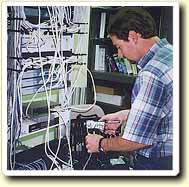

| wireless |
| home page |
|  |
| Invitation Enrollment in PSSUG, membership is free. . PSSUG - Agenda PSSUG Home Home Directions Agenda About Schedule Join Welcome to the homepage for the SQL Server Users Group This group is a way of users involved with SQL Server in the Pittsburgh area to benefit from discussing experiences and issues with other members on the first Wednesday of every month. Topics are presented by members of PSSUG, as well as hardware and software vendors. Invitation Enrollment in PSSUG, membership is free. |